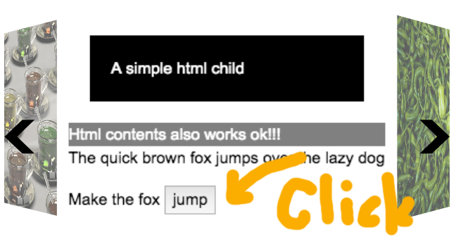
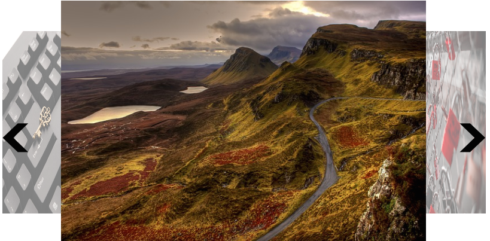

A true cross browser 3D Carousel
It supports all major browsers including IE8,9 with best effort. Full 3D effect requires `css transform3d` support browsers.
Work with Html child item
Children item can be any Html elements, not only image. Feel free to rotate and see how the dom elements are rendered. You can even add event on it. I haven't yet tested on complex cases, but I am sure there won't be a problem.
Just put any html elements you want and wrap them in a tag as a child. It works!
<div>
<p style="background-color:black; color:white; margin:20px; padding:20px;">A simple html child</p>
<div style="background-color:gray; color:white;">Html contents also works ok!!!</div>
<div>The quick brown fox jumps over the lazy dog</div>
<p>
Make the fox
<button type="button" onclick="alert('Jump!!');">jump</button>
</p>
</div>
<li><img src="./images/fresh-peppers.jpg" /></li>
How does it look like on old browsers? like IE8,IE9?
Here's how does it look like on IE8. As the legacy browsers do not support 3d transform, It try to emulate with transform, matrix filter ...
And here for recent browsers